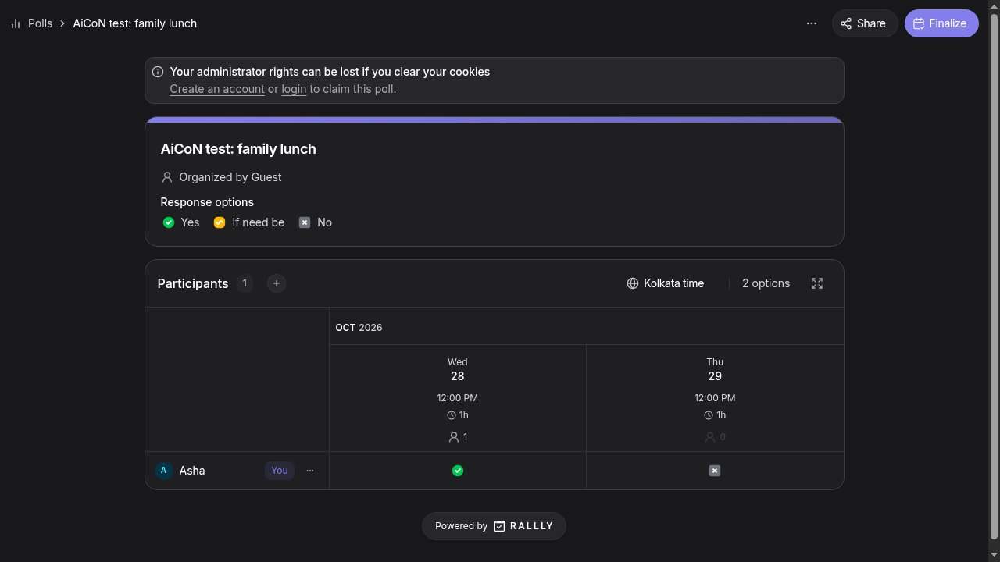

Rallly: pick a group meeting time with one link, no sign-up
Stop the endless "when works for everyone?" chat thread. Rallly lets you propose a few times, share one link and collect votes, and nobody needs an account. We created and voted on a poll ourselves; here is what the official pages confirm.
Quick facts
- Free group scheduling polls: propose a few times, share one link, and everyone votes on when they can make it.
- No account needed to create a poll or to vote; we verified both in our own test.
- Free plan: create as many polls as you like with up to 3 open at a time, unlimited participants, no card, per the official pricing page.
- Each participant automatically sees the options in their own time zone.
- Rallly states it shows no ads and sells no data, and that the service is open source; these are the provider's own statements, which we did not audit.
One link instead of fifty messages
Rallly is a group scheduling poll. You propose a few dates or times, share one link over WhatsApp, email or Slack, and each person marks Yes, If need be or No. The results table shows at a glance which time works for the most people, and you can then finalize the chosen time. Participants need no account and nothing installed; voting happens in the browser.
Our test: poll created and voted on without any account

Without signing up, we created a poll titled "AiCoN test: family lunch" with two time options and got a shareable invite link. We then voted as a participant using only a name (the email field is optional), and the results table updated to show one participant and the vote. The whole flow, from opening the site to a counted vote, took a few minutes. We deleted the test poll afterwards.
Two honest friction notes: a guest-created poll warns that administrator rights live in your browser session, so clearing cookies can cost you control of the poll unless you claim it with a free account. And inviting people directly by email is a paid feature; on the free plan you share the link yourself, which for WhatsApp groups is the natural route anyway.
Free limits and the paid option
The pricing page states the free plan is not a trial: you can create as many polls as you like, with up to 3 open at the same time, unlimited participants, and no card required. Free polls are kept for 30 days after their final date. Rallly Pro adds unlimited open polls, indefinite retention, duplicating polls, options like requiring participant emails or hiding names and votes, custom branding and team features. The free plan is what we tested and what this guide covers.
Privacy
Rallly's own FAQ states that it shows no ads, sells no data, collects only what is needed to run the service, and that the project is open source so anyone can inspect how data is handled. It also states that free-plan polls are deleted automatically once they become inactive. These are the provider's statements; we did not audit its servers or network.
Why it matters for Indian users
Coordinating a group over chat means endless back-and-forth: a family function across three cities, a college club meeting, an apartment association gathering, or a call with relatives abroad. A single poll link dropped into a WhatsApp group, where everyone votes in their own time zone and nobody needs to install or sign up for anything, cuts that to one message. As with any poll link, share it only with the group you mean to invite, since anyone with the link can vote.
Sources checked 23 October 2026: the Rallly homepage and FAQ, the official pricing page, and our own end-to-end test, linked below.